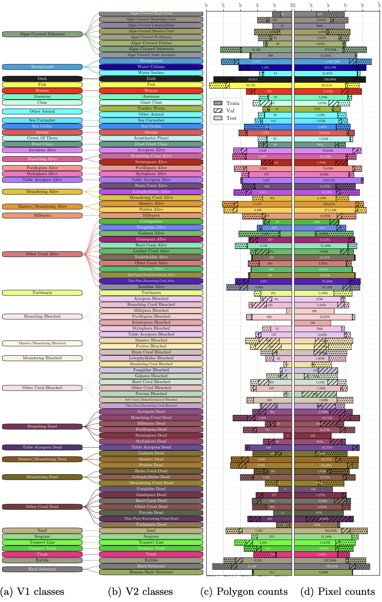
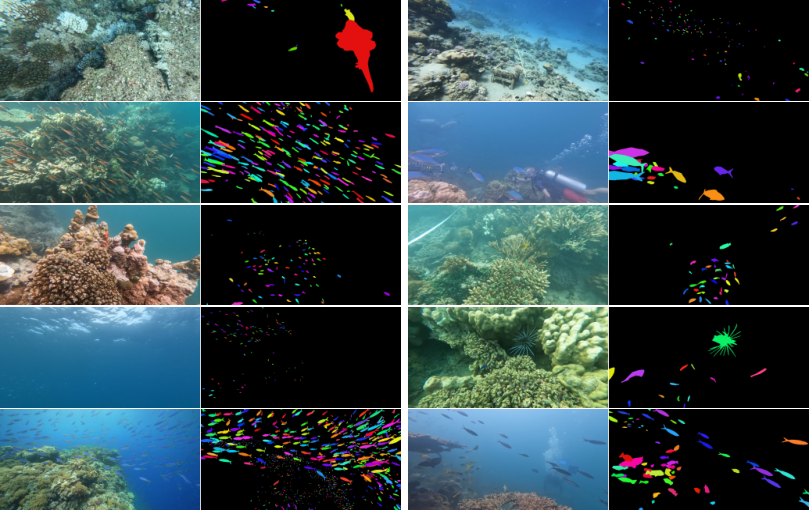
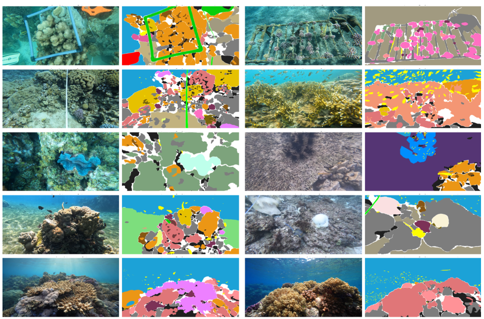
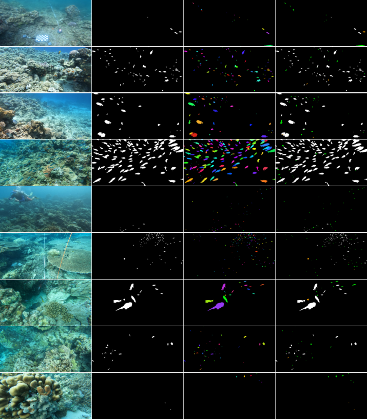
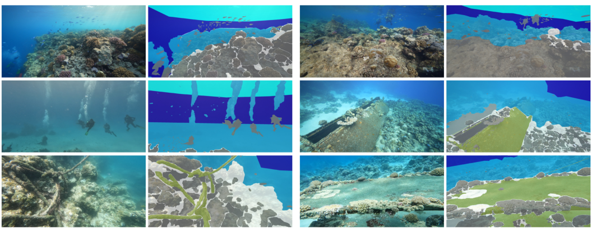
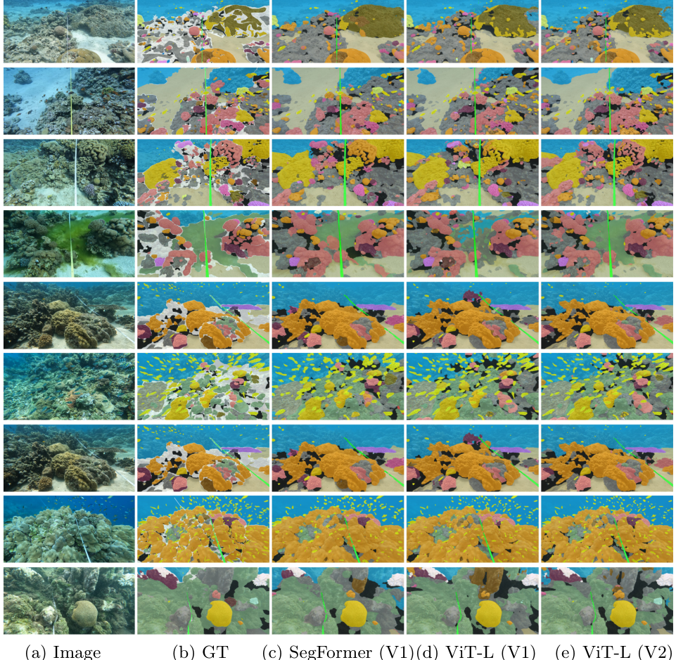

| V1 | V2 | Change | |
|---|---|---|---|
| Annotated polygons | 174k | 270k | +55% |
| Annotated images | 2075 | 2433 | +17% |
| Annotated fish | 22k | 65k | +195% |
| Label classes | 39 | 95 | +143% |
| Reef sites | 45 | 55 | +22% |
| Average label density | 82.9% | 86.8% | +4.7% |
| Minimum label density | 40% | 60% | +50% |
The dataset is hosted on the
Hugging Face Hub
and is released under the Apache 2.0 license. Use it with the
datasets
package.
Semantic segmentation — RGB images and 95-class semantic masks (the default configuration):
from datasets import load_dataset
dataset = load_dataset("josauder/coralscapesV2")
image = dataset["train"][0]["image"] # (1024, 2048, 3) uint8
label = dataset["train"][0]["label"] # (1024, 2048) uint8, values 0-95Fish instance segmentation — add per-fish instance masks
(fish is class 25, per-fish IDs are 25 * 2000 + instance_index):
import numpy as np
from datasets import load_dataset
ds = load_dataset("josauder/coralscapesV2", "instances", split="train")
row = ds[0]
instance_map = np.asarray(row["instance_ids"], dtype=np.uint16)
fish_ids = np.unique(instance_map[instance_map // 2000 == 25])
fish_masks = {int(i): (instance_map == i) for i in fish_ids}Video sequences — 31-frame clips (offsets -20..+10) around each labeled anchor frame; stream to avoid the ~206 GB download:
from datasets import load_dataset
seqs = load_dataset("josauder/coralscapesV2", "sequences", split="train", streaming=True)
clip = next(iter(seqs))
frames = clip["frames"] # 31 RGB frames
anchor = frames[clip["anchor_index"]] # labeled frame (anchor_index == 20)
label = clip["label"] # semantic mask for the anchor frame
The 39 V1 classes (left) map into 95 fine-grained V2 classes, shown with their polygon and pixel counts in each dataset split.

Fish instance masks (each fish shown in a random color). Comparing against V1's static-frame annotations reveals that 56.1% of fish were missed without video context.




| Model | Backbone | Classes | V2 Acc | V2 mIoU | |
|---|---|---|---|---|---|
| DINOv3 ViT-L + LoRA + DPT | DINOv3 ViT-L | 39 | 84.390 | 66.086 | HF |
| DINOv3 ViT-L + LoRA + DPT | DINOv3 ViT-L | 95 | 81.700 | 40.221 | HF |
| DINOv3 ViT-B + LoRA + DPT | DINOv3 ViT-B | 39 | 82.265 | 60.810 | HF |
| DINOv3 ViT-B + LoRA + DPT | DINOv3 ViT-B | 95 | 80.243 | 36.918 | HF |
| SegFormer MiT-B5 | MiT-B5 | 39 | 82.801 | 59.020 | HF |
| SegFormer MiT-B5 | MiT-B5 | 95 | 80.382 | 37.177 | HF |
Test-set pixel accuracy and mean IoU on CoralscapesV2, using the strided 2×1024×1024 prediction protocol; metrics are reported in each model's native class set. The 95-class models are additionally evaluated with predictions mapped to the 39-class set, and single-pass (768×1376) numbers are reported in each model card.
from transformers import SegformerImageProcessor, SegformerForSemanticSegmentation
from datasets import load_dataset
repo = "EPFL-ECEO/segformer-b5-finetuned-coralscapesv2-1024-1024-95_class"
image = load_dataset("josauder/coralscapesV2", split="test")[0]["image"]
processor = SegformerImageProcessor.from_pretrained(repo)
model = SegformerForSemanticSegmentation.from_pretrained(repo)
inputs = processor(image, return_tensors="pt")
outputs = model(**inputs)
labels = processor.post_process_semantic_segmentation(
outputs, target_sizes=[(image.size[1], image.size[0])]
)[0]The DINOv3 encoder is gated: accept the license at
facebook/dinov3
and run hf auth login first.
import importlib.util, torch
from pathlib import Path
from huggingface_hub import snapshot_download
from PIL import Image
from datasets import load_dataset
repo = "EPFL-ECEO/coralscapesv2-dinov3-vitl-lora-dpt-95_class"
root = Path(snapshot_download(repo))
# Load the inference class shipped with the model
spec = importlib.util.spec_from_file_location("chm", root / "coralscapes_hub_model.py")
chm = importlib.util.module_from_spec(spec); spec.loader.exec_module(chm)
model = chm.Dinov3DPTSegmenter.from_pretrained(root).eval()
image = load_dataset("josauder/coralscapesV2", split="test")[0]["image"].convert("RGB")
image = image.resize((1376, 768), Image.BILINEAR) # single-pass at 768x1376
pixel_values = model.processor(images=image, return_tensors="pt", do_resize=False)["pixel_values"]
with torch.no_grad():
logits = model(pixel_values)
pred = logits.argmax(1)[0].cpu().numpy()The Transnational Red Sea Center is a scientific research center created in 2019 at the Ecole Polytechnique fédérale in Lausanne (EPFL) with the official support of the Swiss Foreign Ministry. An independent and not-for-profit organization, the Center capitalizes on Switzerland's neutrality, its longstanding tradition of promoting dialogue and its reputation for scientific excellence in order to bridge science and diplomacy for the future of coral reefs. In the Red Sea and beyond.
@inproceedings{sauder2026coralscapesv2,
title={CoralscapesV2: Panoptic and Fine-Grained Visual Scene Understanding in Coral Reefs},
author={Sauder, Jonathan and Ruckli, Thomas and Strodomskyt{\.e}, Gabriel{\.e} and Abdallah, Ibrahim Souleiman and Abdi, Rahma Hassan and Awaleh, Djama Goumaneh and Farah, Mohamed Houssein and Nour, Moustapha and Saad, Osama Sharhubil and Altaib, Mustafa Mohammed Khalafallah and Kteifan, Maysoon and Alsoqi, Farah and Zgool, Eyad and Al-Omari, Jafar and Gebreluel, Temesgen Gebremeskel and Abdulkerim, Zekaria Zekeria and Ghirmay, Meron and Beraki, Teklehaimanot and Tuia, Devis and Banc-Prandi, Guilhem},
booktitle={Proceedings of the European Conference on Computer Vision (ECCV) Workshop on Marine Vision},
year={2026}
}